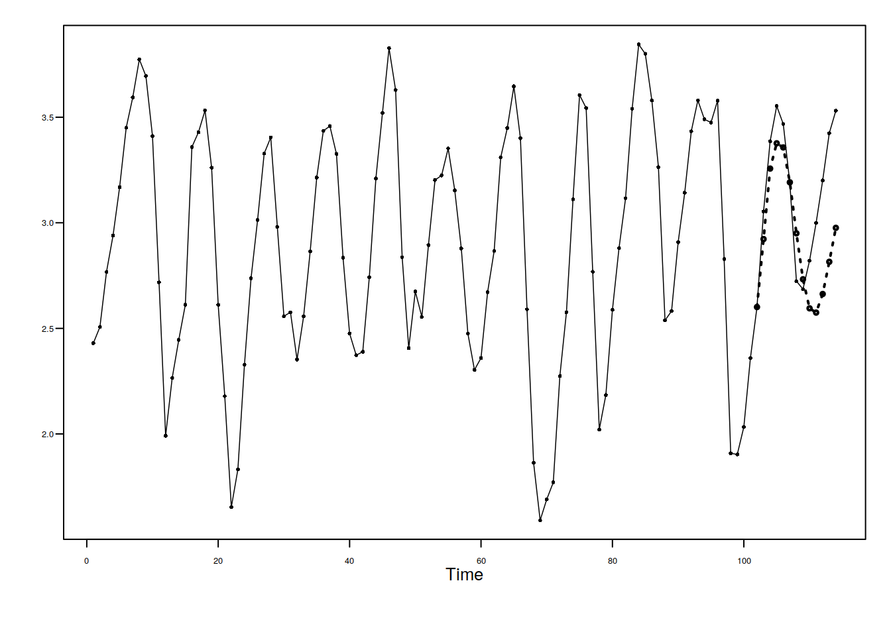

tswase <- function(vec, ..., ahead) {
f <- fore.arma.wge(vec, ..., n.ahead = ahead)
ASE <- mean((f$f - vec[(length(vec) - (ahead - 1)):(length(vec))])^2)
res <- list(fore = f, ASE = ASE)
return(res)
}
res1 <- tswase(vec = llynx, phi = c(1.3, -0.7, 0.1, -0.2), ahead = 12, lastn = T,
limits = F)library(pander)
res2 <- tswase(vec = llynx, phi = c(0.7, 0.1, -0.2, -0.3), theta = -0.6, ahead = 12,
lastn = T, limits = F)
pander(res1)
pander(res2)fore:
ASE: 0.1103
fore:
ASE: 0.111